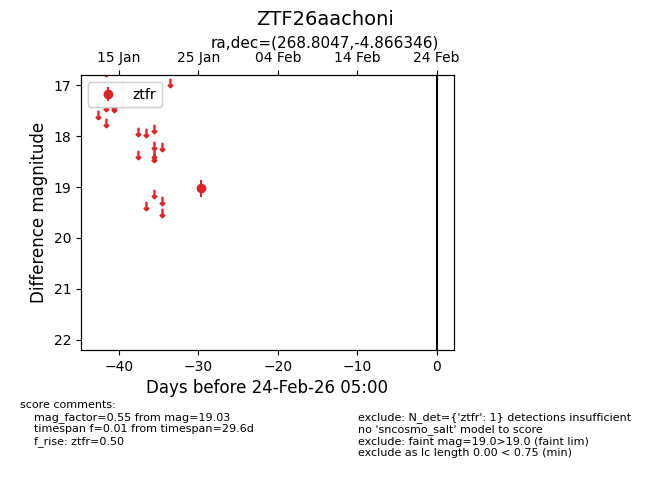
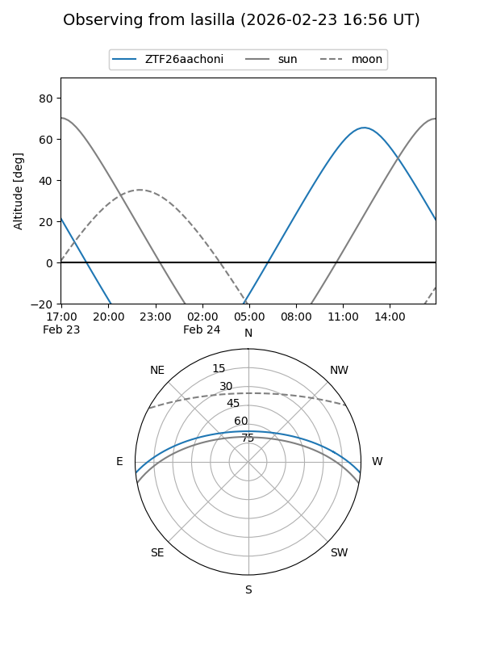
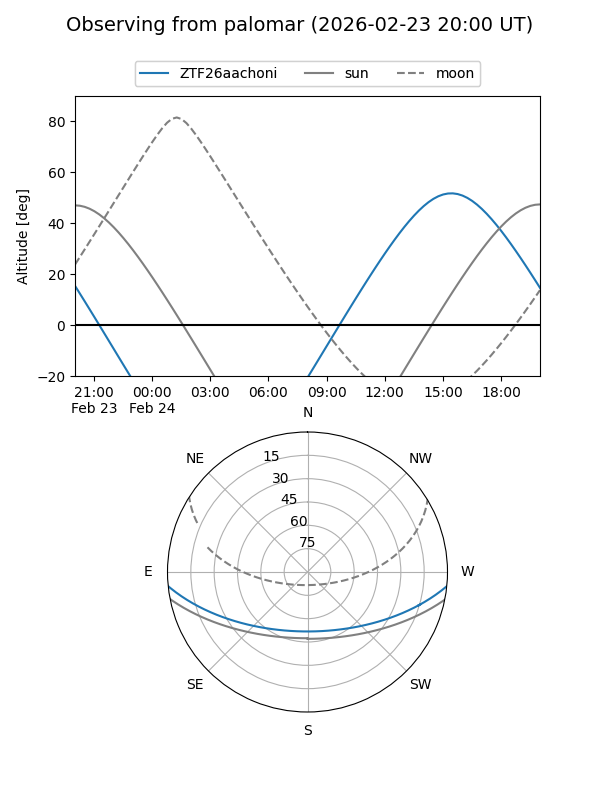

ZTF26aachoni
Target ZTF26aachoni at 2026-01-27 14:16
Aliases and brokers:
FINK: link
Lasair: link
ALeRCE: link
alt names
ZTF26aachoni (ztf,fink_ztf)
Coordinates:
equatorial (ra, dec) = 268.8047,-4.86635
equatorial (HMS+DMS) = 17:55:13.14,-04:51:58.84
galactic (l, b) = (22.0489,+10.17594)
Flags:
Photometry:
last ztfr=19.03
1 ztfr detections
Lightcurve

Visibility


Additional plots